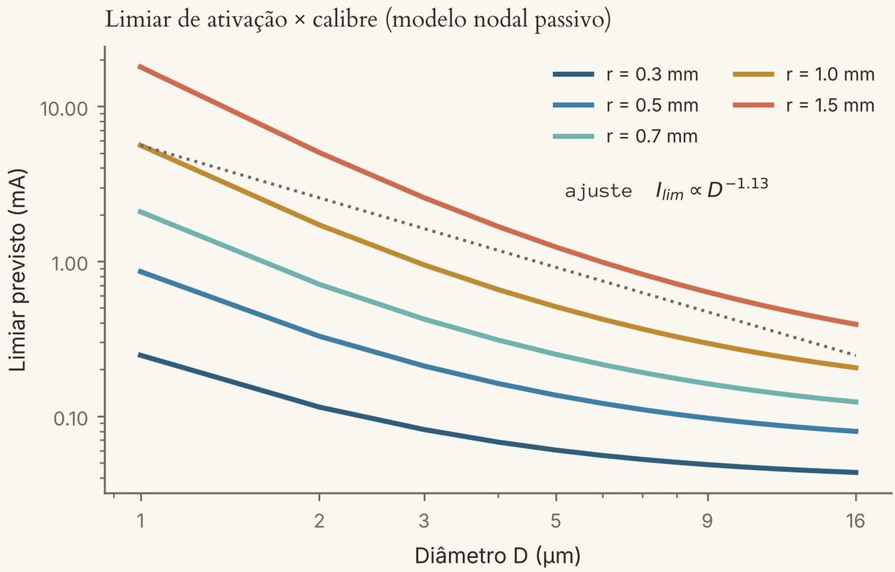

Por que o estímulo chega ao tato antes da dor?
O axon é um projeto de simulação in silico da neuromodulação: um modelo nodal verificado e um simulador multiescala que vai do corpo inteiro à membrana do axônio. Acompanhe aqui as novidades, a agenda, os resumos em áudio e a linha do tempo do projeto.
MODELO · SEMENTE 42 limiar ∝ D−1,13, razão Aδ/Aβ 3,21 a 1 mm · diorama ilustrativo
O simulador em ação
Capturas do app em execução. Cada cartão abre o simulador no mesmo ponto.
Novidades
Atualizações do simulador, publicações, bastidores e o registro de evolução do programa.
Linha do tempo e roadmap
Agenda
Eventos, apresentações, prazos e atividades. Assine para ver tudo no seu calendário.
Próximas datas
Assinar a agenda (.ics)Podcast · resumos em áudio
Episódios curtos com resumos do material desenvolvido e das atividades. Só entram na playlist depois de liberados pela coordenação.
Galeria e documentos de registro
Fotos, vídeos, pranchas e os documentos que registram cada etapa do projeto.
Documentos de registro
O programa em números
Resultados do modelo nodal: cadeia de 41 nós, Monte Carlo com 20 000 sorteios, semente fixa — os mesmos valores que o simulador reproduz no navegador.


Acompanhe
Receba o boletim com as novidades, as próximas datas e os novos episódios. Só usamos o seu e-mail para isso; o cancelamento é por um link em cada envio.
Apoio
Dúvidas sobre o simulador, a documentação, colaborações ou o uso em aula. A equipe responde pelo e-mail informado.
O simulador pode ser usado para tratar pacientes?
Não. O axon é uma ferramenta de pesquisa e ensino in silico, não é dispositivo médico e não deve ser usado para calcular parâmetros de estimulação em pessoas.
Os casos clínicos são reais?
Não. São casos fictícios para ensino; o importador recusa campos de identificação pessoal.
E as etapas com tecido ou animais?
Ficam num projeto vinculado, de mesma temática, que só começa após aprovação das entidades responsáveis e com laboratório credenciado. Este projeto é de simulação in silico.